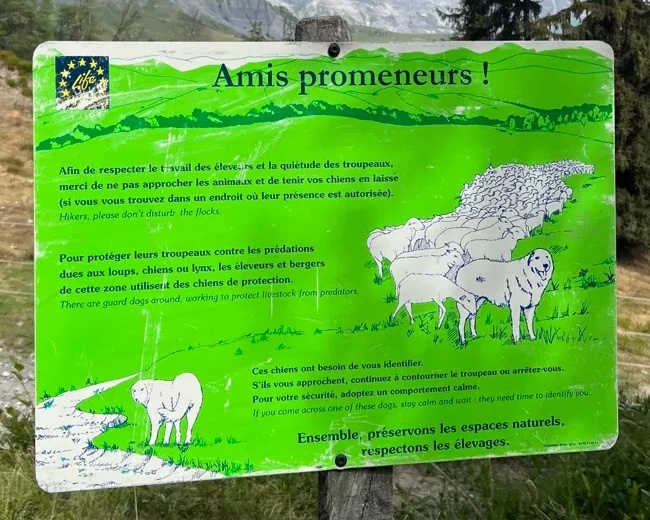

Bells, a cattle grid or a sign
Put your dog on a short lead and go wide around the animals, never through them. On a bike, get off and push. Swiss signs ask you to keep your distance.
 ← Back to Safety Library
← Back to Safety Library
Spot a guarded flock early, go wide, and know what to do if a guardian dog comes over.
Italian and Swiss guidance says not to bring a pet dog where guardian dogs work. Before you go, check local signs, pasture maps and recent trail reports.
Put your dog on a short lead and go wide around the animals, never through them. On a bike, get off and push. Swiss signs ask you to keep your distance.
Often a Maremmano-Abruzzese or Pyrenean mountain dog. It can lie hidden in the flock and is more alert at dusk and when the flock moves. Don’t pick your dog up. If dogs are banned or you can’t go wide, turn back.
It wants you away from its flock. Follow the three steps below.

A guardian-dog sign at a pasture in the French Alps.
Cattle are different. Keep well away, especially from cows with calves. Keep your dog on the lead, but let go if cattle chase you, so you can each get away.
It wants to check you’re not a threat, so give it time and don’t try to get past. Never run, shout, throw stones or wave sticks. Don’t pet or feed it.
Keep the lead on while you can keep your distance. If the guardian dog actually attacks your dog, French national guidance says to let go of the lead. Never pick your dog up. Move away calmly and turn back.
Once you’re well away:
References checked 5 November 2026: Italian Alpine Club (CAI) guidance for walkers meeting guardian dogs; AGRIDEA and Herdenschutz Schweiz signs and leaflets; French National Parks guardian-dog guidance and the official DREAL leaflet; Vallée d’Aulps current guidance; Swiss cantonal reports on guardian-dog bites; and UK Department for Environment, Food & Rural Affairs cattle advice. Local signs and restrictions override general guidance. Animal behaviour is never guaranteed.
This is general information, not a diagnosis or a substitute for veterinary care.